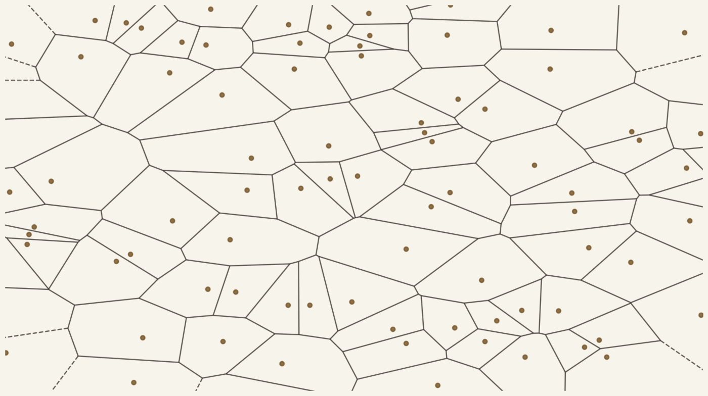
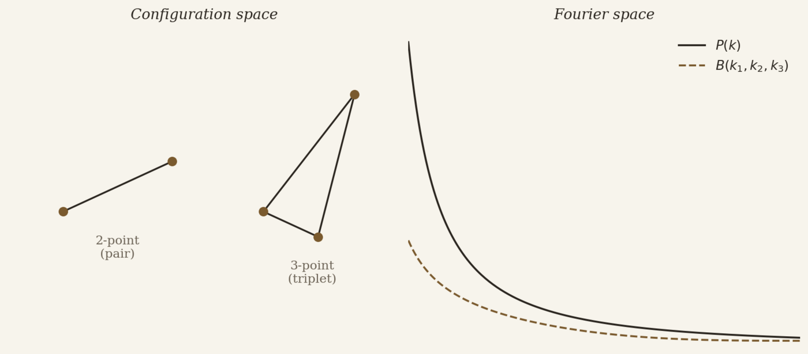
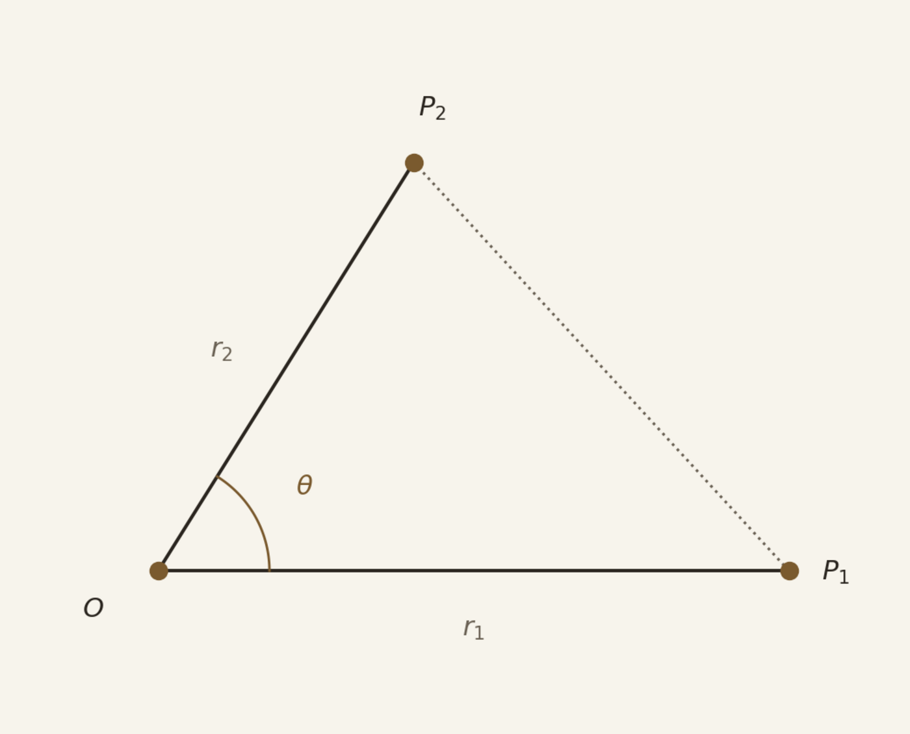

Open questions
Cosmology's standard model explains a remarkable range of observations, yet its main ingredients — dark matter and dark energy — remain unidentified, and the growth rate of cosmic structure offers one of the sharpest tests of whether General Relativity holds on the largest scales. Answering these questions requires precise, unbiased measurements of how matter is distributed across the Universe.
Large-scale structure as a probe
Galaxy redshift surveys — Euclid, DESI, and their predecessors such as BOSS — map the three-dimensional distribution of galaxies across billions of light-years. This large-scale structure, the cosmic web of filaments, nodes, and voids, encodes the initial conditions of the Universe and their subsequent gravitational evolution, making it one of the richest probes available for the questions above.

Beyond linear theory
On large scales and at early times, structure grows linearly and its statistics stay close to Gaussian — fully captured by the two-point correlation function (2PCF), or equivalently the power spectrum. But most of the cosmological information accessible to current and future surveys sits at smaller, mildly nonlinear scales, where gravitational collapse generates non-Gaussianity. There, the 2PCF alone leaves information on the table.
3PCF versus the bispectrum
The three-point correlation function (3PCF) is the next term in the same hierarchy, and its Fourier-space counterpart is the bispectrum. The two carry, in principle, the same information — but working in configuration space has practical advantages I have relied on throughout my research: geometric intuition for what a given signal means physically, and more direct control over how survey masks and complex geometries enter the analysis.


My contribution
My research has developed the analytic modelling of the 3PCF into the mildly nonlinear regime and turned it into a tool that can actually be applied to data. This includes an analytic next-to-leading-order model for the matter 3PCF, the first joint full-shape analysis combining the 2PCF and 3PCF on real spectroscopic data (BOSS DR12), the full-shape real-space modelling adopted in the Euclid preparation papers, and ML emulators that make joint 2PCF+3PCF likelihood exploration computationally feasible. See Publications for the full list.